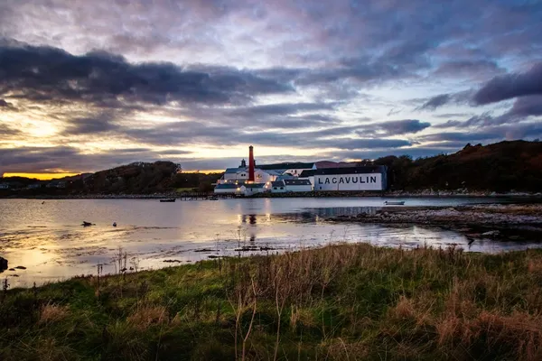

Islay: Scotch malt whisky

Photo: B K on Unsplash
A small Hebridean island famous for heavily peated, maritime malts, especially from the distilleries on its south coast.
How it's made
Barley is dried with peat smoke, which gives the phenols behind the smoky, medicinal style. Some Islay distilleries also make unpeated malts.
Malted barley is dried over peat fires, and the smoke's phenols carry into the spirit; peating is measured in parts per million. Mashing, fermentation and double distillation in copper pot stills follow the usual malt whisky method, and most malt now comes from the Port Ellen maltings, though Bowmore and Laphroaig still floor-malt some of their own.
History
Islay has been distilling for centuries, and most of its famous names, such as Bowmore (1779), Laphroaig and Ardbeg (both 1815) and Lagavulin (1816), date from the late 1700s and early 1800s. Today the small island has about ten working distilleries.
Ageing and label terms
Scotch must age at least 3 years in oak in Scotland; most Islay malts use ex-bourbon casks, with sherry casks for richer styles. An age statement gives the age of the youngest whisky in the bottle.
Styles
Heavily peated, medicinal and maritime on the south coast (Laphroaig, Lagavulin, Ardbeg); medium smoke from Bowmore and Caol Ila; light or unpeated malts from Bunnahabhain and Bruichladdich.
Rules and protected names
Islay is one of the five protected Scotch whisky regions under the Scotch Whisky Regulations 2009. Scotch must be distilled and matured in Scotland and bottled at a minimum of 40% ABV.
How to serve and classic cocktails
Sip neat or with a few drops of water to open up the smoke. Classic drinks: the Penicillin (with an Islay float), a smoky Highball and a Rob Roy made with peated malt.
With food
Smoked salmon, oysters, grilled meats, strong blue cheese and dark chocolate.
Good to know
Peat smoke is not the same as saltiness: the sea-spray notes come mostly from the spirit style and coastal setting. The island's whisky festival, Fèis Ìle, takes place each year at the end of May.
Producers
- Laphroaig
- Lagavulin
- Ardbeg
- Bowmore
- Bruichladdich
Bottles to try
Laphroaig 10 Year Old
Big peat smoke, seaweed, iodine and a sweet vanilla core.
Serve: Neat or with a drop of water
Lagavulin 16 Year Old
Deep and smoky: peat, sea salt, dried fruit and sherry sweetness.
Serve: Neat
Ardbeg Ten Years Old
Intense peat smoke balanced by lemon, vanilla, black pepper and espresso.
Strength: 46% · Age and cask: 10 years, ex-bourbon casks
One of the most heavily peated malts on Islay's south coast, bottled without chill filtration so it keeps more texture. Ardbeg was founded in 1815 and was nearly lost in the 1980s and 1990s before being revived.
Serve: Neat or with a splash of water
Bowmore 12 Year Old
Gentle peat smoke, honey, citrus and dark chocolate.
Strength: 40% · Age and cask: 12 years, ex-bourbon and ex-sherry casks
Bowmore, founded in 1779, is one of the oldest distilleries on Islay and still turns some of its own barley on traditional malting floors. Its warehouse, No. 1 Vaults, sits right on the shore of Loch Indaal.
Serve: Neat or with a few drops of water
Caol Ila 12 Year Old
Elegant smoke with lemon, sea salt, green apple and a light oily texture.
Strength: 43% · Age and cask: 12 years, mostly refill American oak
Islay's largest distillery, set on the shore near Port Askaig looking across to Jura. Much of its spirit goes into blends such as Johnnie Walker, so the single malt is a lighter, fresher style of peated Islay.
Serve: Neat or in a smoky highball with soda
Ardbeg Uigeadail
Big peat smoke wrapped in dark fruit, treacle, espresso and sea salt.
Strength: 54.2% · Age and cask: No age statement, ex-bourbon and ex-sherry casks
Named after Loch Uigeadail, the distillery's water source in the hills above. It marries smoky Ardbeg from bourbon barrels with older spirit from sherry casks, bottled at high strength and without chill filtration.
Serve: Neat with a splash of water, it opens up a lot
Bruichladdich The Classic Laddie
Unpeated Islay: barley sugar, citrus, fresh flowers and a light salty breeze.
Strength: 50% · Age and cask: No age statement, mainly American oak
Proof that not all Islay malt is smoky: this flagship is made from 100% Scottish barley with no peat. Bruichladdich reopened in 2001 and bottles without chill filtration or added colour.
Serve: Neat, or in a Highball for a lighter style
Laphroaig Quarter Cask
Big peat smoke and iodine softened by coconut, vanilla and sweet oak.
Strength: 48% · Age and cask: No age statement, ex-bourbon casks then finished in small quarter casks
Quarter casks hold about a quarter of a standard barrel, so more of the whisky touches the wood and it picks up oak flavour faster. Bottled without chill filtration at a higher strength.
Serve: Neat or with a splash of water; great with smoked food
Kilchoman Machir Bay
Lemon, sweet vanilla and pear with fresh peat smoke and a salty finish.
Strength: 46% · Age and cask: No age statement, mainly ex-bourbon casks with a short Oloroso sherry finish
Kilchoman opened in 2005 as a farm distillery on the west of Islay and grows some of its own barley. Machir Bay, named after the beach nearby, is its main year-round whisky and is not chill filtered.
Serve: Neat, with a little water, or in a smoky highball
Bunnahabhain 12 Year Old
Unpeated and nutty: sherry, dried fruit, honey, a pinch of sea salt and soft malt.
Strength: 46.3% · Age and cask: 12 years, ex-bourbon and ex-sherry casks
Bunnahabhain sits on the north-east coast of Islay facing Jura. Unlike most of the island's malts its standard whisky is made from barely peated barley, and it is bottled without chill-filtration or added colour.
Serve: Neat or with a splash of water
Port Charlotte 10 Year Old
Bold but elegant: bonfire smoke, sea salt, lemon, vanilla and a little dark fruit.
Strength: 50% · Age and cask: 10 years, first and second-fill American whiskey casks and second-fill French wine casks
The heavily peated range from the Bruichladdich distillery, named after a village a few miles down the coast whose own distillery closed in 1929. It is bottled without chill-filtration or added colour.
Serve: Neat, with a few drops of water
More whisky regions
Explore all spirits in the interactive guide
The Wine Reference newsletter
New wines, stories and career guides, one email a week at most.
Over 18s only. Unsubscribe any time with one click. Your email is stored securely by Kit and never shared.
Support The Wine Reference
This guide is free, with no paywall. If it helped you choose a bottle, you can buy me a glass and keep it growing.
🍷 Buy me a glass